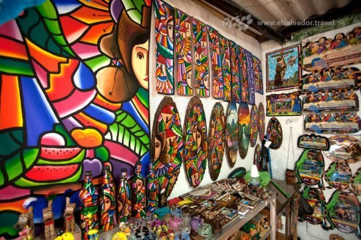
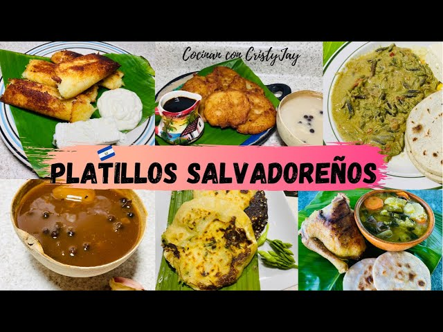
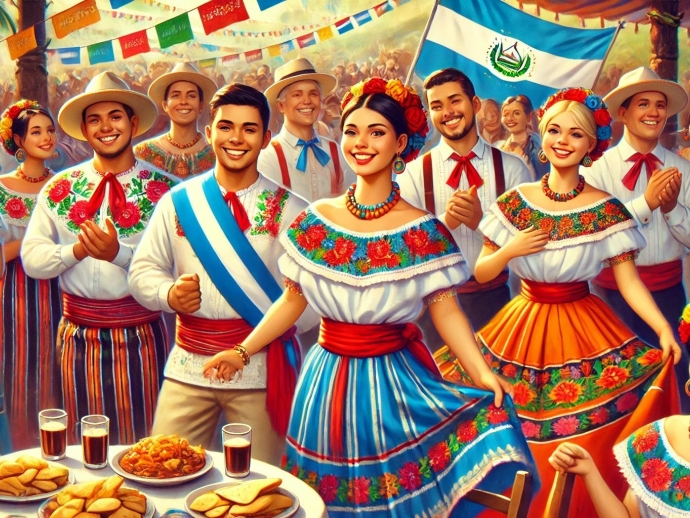
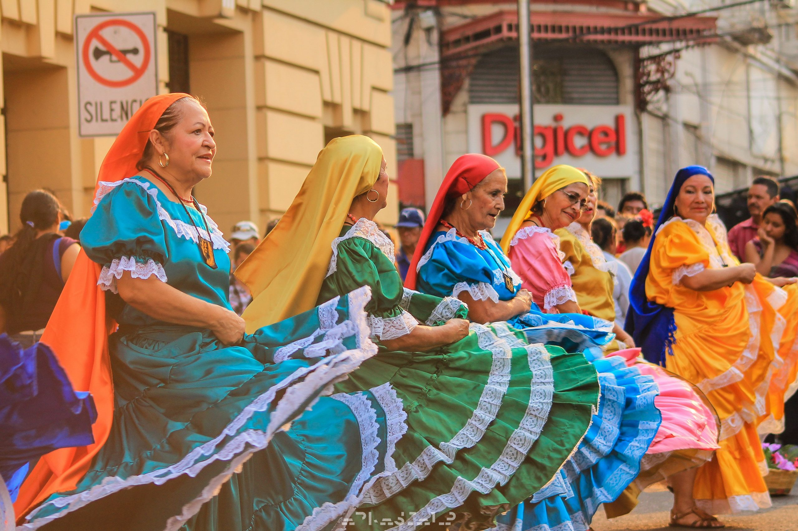

El Salvador es pequeño, pero su cultura es gigante. Con una mezcla de colores, sabores y música, este país centroamericano tiene mucho que ofrecer.
Los artesanos salvadoreños crean piezas llenas de vida, como las máscaras coloridas y textiles llenos de detalles. ¡Todo hecho a mano con mucho amor!
¡Las pupusas son las reinas de la cocina! Estas tortillas rellenas son deliciosas y están hechas para disfrutar en cualquier ocasión. ¿Te atreves a probarlas?
El Día de los Farolitos ilumina las calles de Ahuachapán con farolitos mágicos que llenan de luz y color cada rincón.
También está el Día de la Independencia, lleno de desfiles y música. ¡Es una gran fiesta!
¡A bailar! Los salvadoreños disfrutan al ritmo de la cumbia y la marimba, moviéndose alegremente con bailes típicos como el Torito Pinto.
